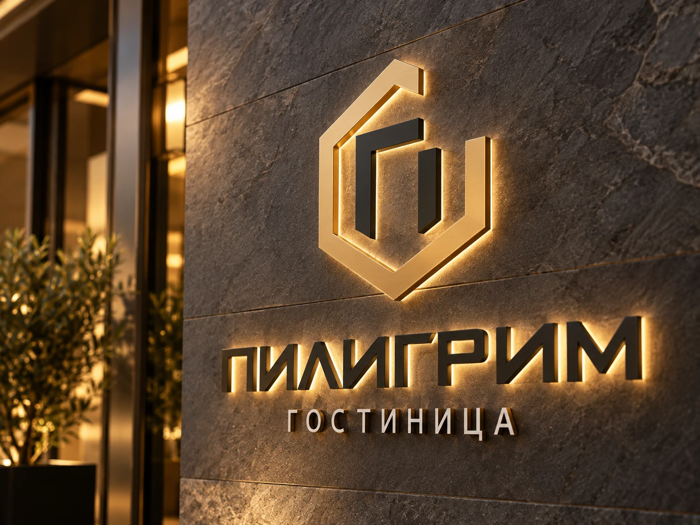
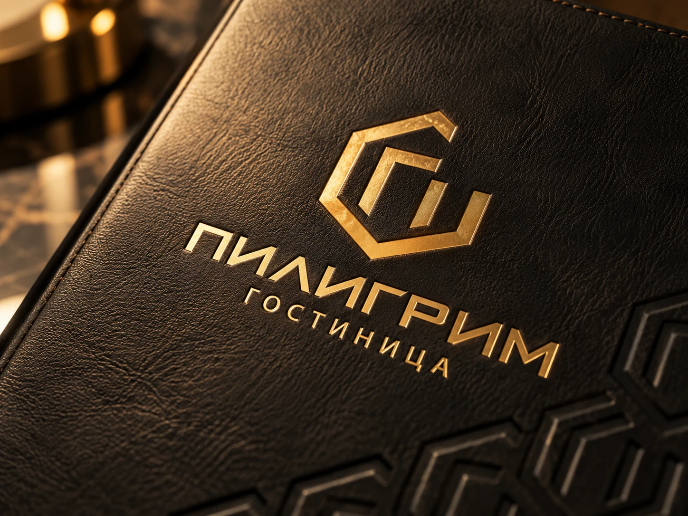
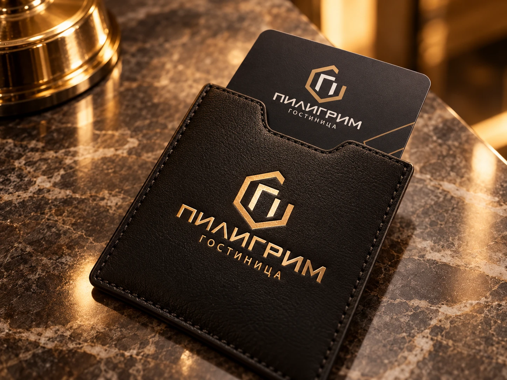
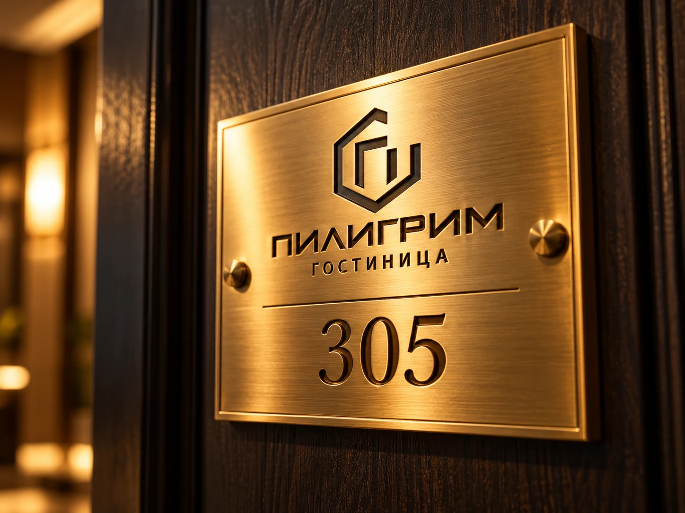
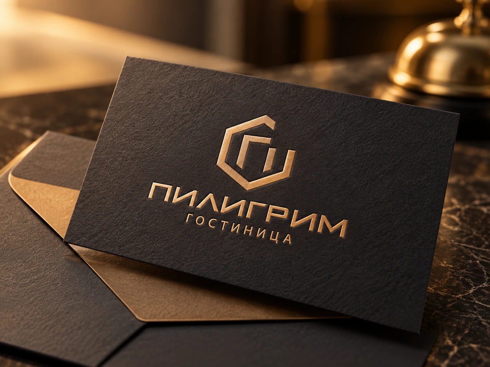
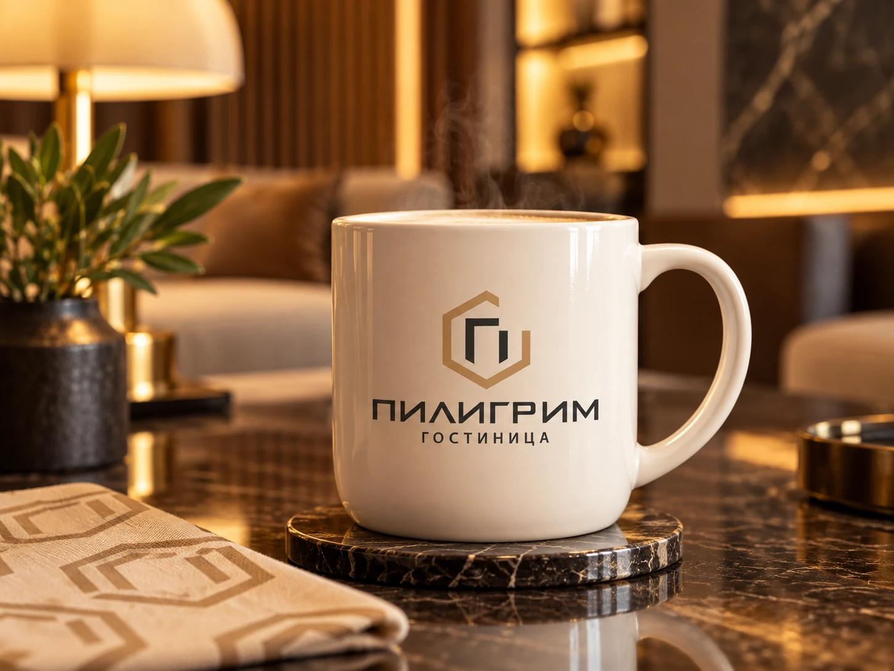
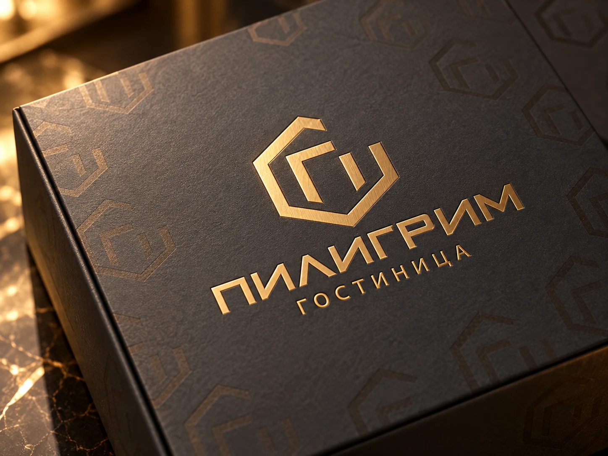
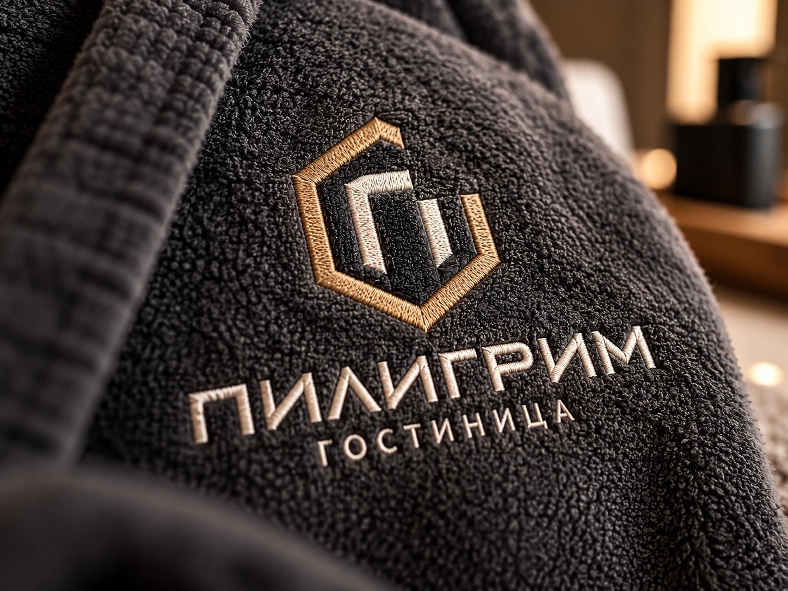

ЛОГОТИПЫ / ФИРМЕННЫЙ СТИЛЬ
Пилигрим
Логотип и фирменный стиль гостиницы «Пилигрим»: геометрический знак, тёмная палитра и золотые акценты. Айдентика на вывеске, полиграфии, навигации и гостиничных принадлежностях.







